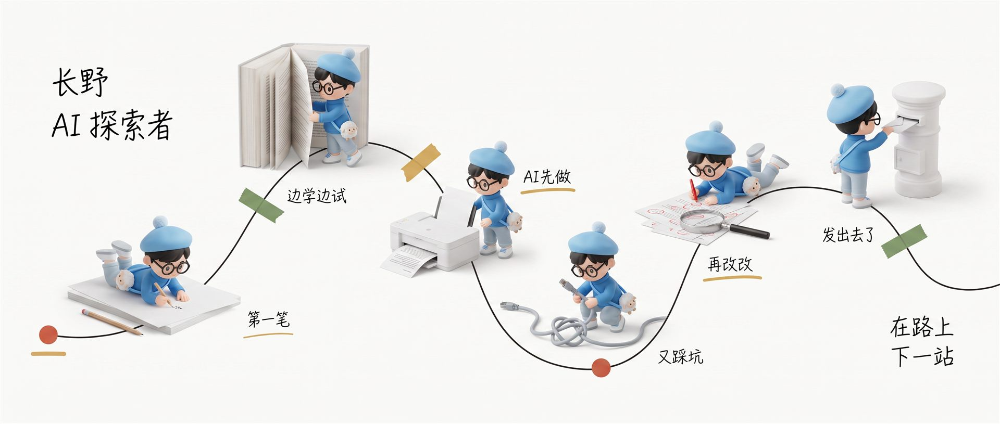

git log --oneline
长野Online · 人生进度
把每段经历当成一关任务——主线推进方向，支线悄悄长出能力。

recent
最近在读
《遥远的救世主》
最近在做
搭个人网站 / 配图技能
最近感兴趣
AI · 情绪 · 认真生活
quest log
🎯 主线任务 MAIN
已完成 2026-08-17
上线个人网站 · AI探索者
一个人 + AI 搭出这个站，实践"边让他人看见"。
已完成 2026-08-18
长野配图技能 · changye-scenes
把个人 IP 配图流程固化成技能——一篇文章 → 5 张实物场景图，踩过的坑都变成教程。
进行中 2026-08 —
把能力落地成作品
家装 CRM、配图技能、文章——都往长远做，做一个发一个。
⚗️ 支线任务 SIDE
已完成 2026-08-01
建立个人知识系统
Obsidian 记忆库、编号体系、每日复盘——任何信息 5 秒内定位。
已完成 2026-08-12
写下《看见框架，然后真实地活》
从"楚门的世界"出发的思考流，想清楚自己正处在哪一步。
待解锁 2026-09
优化检索效率
知识库阶段 2：查询模板、标签体系，向 5 秒定位靠拢。
人生的支线，往往长成下一个主线——往前走。